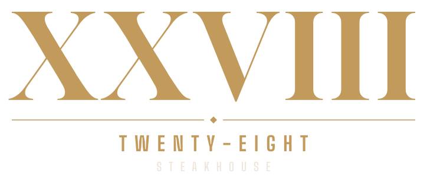

Brand and launch materials · Edition I · Preview
Video hero, the Ageing Room board, the menu, reservations.
Logo, colour, type, photography, motion, print and digital materials.
Page-turning menu and the printable PDF.
The 28-day launch campaign: posts, reels, ads, emails.